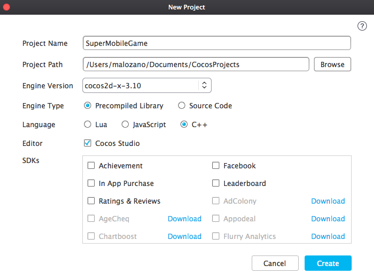
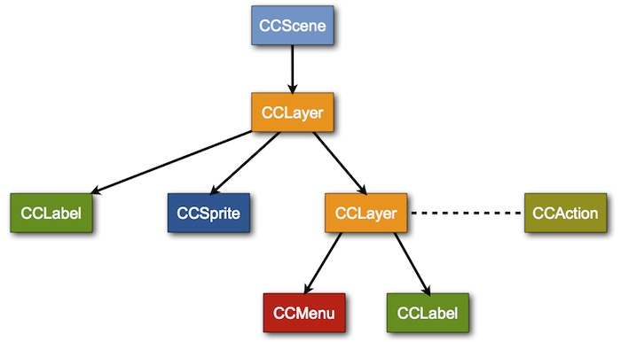

El motor cocos2d-x¶
Uno de los motores más conocidos y utilizados para desarrollo de videojuegos para dispositivos móviles es Cocos2D. Existe gran cantidad de juegos para iOS implementados con este motor. Aunque inicialmente se trataba de un motor escrito en Objective-C únicamente para iOS, actualmente contamos con Cocos2d-x (http://www.cocos2d-x.org) que es la versión multiplataforma de este motor. El juego se desarrolla con C++, y puede ser portado directamente a distintos tipos de dispositivos (Android, iOS, Windows Phone, etc).
Vamos a comenzar estudiando la forma de crear los diferentes componentes de un videojuego mediante el motor Cocos2d-x.
Instalación de Cocos2d-x¶
Existen dos formas de instalar Cocos2d-x:
- Instalar únicamente el framework, con lo que tendremos todo el código fuente de la librería y comandos del terminal para crear nuevos proyectos que la utilicen
- Instalar todo el kit de herramientas de Cocos, que nos proporciona una interfaz para la creación de nuevos proyectos, una herramienta visual para la creación de escenas (Cocos Studio), y la posibilidad de utilizar una versión precompilada de la librería, lo cual ahorrará mucho tiempo de compilación en nuestro proyecto.
Elegiremos la primera opción si queremos modificar el código de la librería y hacer alguna contribución al proyecto, mientras que en otros casos sería más conveniente utilizar la segunda.
Creación del proyecto con Cocos¶
Si instalamos el kit completo de herramientas, contaremos con la herramienta Cocos que nos permitirá crear un nuevo proyecto multiplataforma con esta librería, y gestionar los proyectos existentes.

Al crear un nuevo proyecto nos dejará elegir:
- Nombre del proyecto.
- Ruta del directorio de proyectos. Ruta del disco donde se almacenará el proyecto Cocos2d-x. Será un directorio con el nombre indicado en el campo anterior.
- Tipo de motor. Podemos elegir si queremos que nuestro proyecto integre los fuentes de la librería de Cocos2d-x, o sólo los binarios. Con la primera opción la compilación será más lenta, pero nos permitirá hacer cambios en la librería si es necesario.
- Lenguaje de desarrollo. Además de C++, podremos también crear videojuegos mediante lenguajes de script como Lua o Javascript.
- Editor. Nos permite indicar si queremos utilizar Cocos Studio para la edición visual de las escenas.
- SDKs. Nos permite incluir plugins adicionales para integrar servicios nativos de la plataforma o servicios de terceros, como por ejemplo redes sociales o analíticas.

Creación del proyecto desde la terminal¶
Tanto si tenemos el kit completo como sólo el framework, tendremos la opción de crear un nuevo proyecto desde la terminal.
Al descargar y descomprimir Cocos2d-x, veremos en el directorio raiz de la libreria un script llamado setup.py. Este hay que ejecutarlo una vez después de haber descomprimido la libreria (si utilizamos el instalador esto se hará de forma automática). Este mismo script nos introducira en nuestro fichero ~/.profile las rutas necesarias para utilizar la libreria desde línea de comandos. De manera manual podríamos cargar dichas variables mediante el comando source ~/.profile, pero eso se realizará de manera automática cada vez que abramos una nueva terminal.
De esta manera tendremos acceso a un script llamado cocosque permite entre otras cosas crear la plantilla para un nuevo proyecto Cocos2d-x multiplataforma.
Deberemos proporcionar la siguiente información:
1 2 3 | cocos new MiJuego -p es.ua.dccia
-l cpp
-d MisProyectosCocos
|
Esto nos creará un proyecto (carpeta) MiJuego en la subcarpeta MisProyectosCocos del directorio donde nos encontremos. El lenguaje utilizado será C++ (-l cpp). La plantilla del nuevo proyecto será la misma para todos los sistema soportados. Por ejemplo, si queremos
trabajar con la versión de iOS, dentro del directorio de nuestro proyecto entraremos en la
subcarpeta proj.ios_mac y abriremos el proyecto Xcode. Todas las plataformas
comparten los mismos directorio de clases (Classes) y recursos (Resources)
de nuestro juego. Sólo cambian los ficheros de configuración del proyecto que los "envuelve".
Podremos de esta forma crear un nuevo proyecto que contendrá la base para implementar un videojuego
que utilice las librerías de Cocos2d-x.
El elemento central de este motor es un singleton de tipo Director, al que
podemos acceder de la siguiente forma:
1 | Director::getInstance() |
Tipos de datos¶
Como hemos comentado, Cocos2d-x proviene del motor Cocos2d para iOS. Este motor estaba implementado en Objective-C, sobre la API Cocoa Touch, y por lo tanto estaba muy vinculado a sus tipos de datos.
Por este motivo Cocos2d-x implementa sus propios tipos de datos equivalentes a los de Cocoa Touch para poder trabajar de la misma forma. Vamos a ver cuáles son estos tipos de datos.
Por un lado tenemos la clase Ref. Todos los objetos de la librería
heredan en última instancia de esta clase. En ella se define por ejemplo el mecanismo de
gestión de memoria que utilizan todos los objetos de la librería.
Tenemos una serie de colecciones como Vector<>, Map<> especiales de Cocos2d-x que tienen en cuenta su modelo particular de memoria, pero con los que podremos utilizar la sintaxis de C++ para este tipo de colecciones. También tenemos los tipos Value, ValueVector y ValueMap para la representación de estructuras de datos, que nos permiten por ejemplo cargar ficheros .plist de forma automática. El primero de ellos es un wrapper que permite almacenar tipos básicos (bool, int, string, etc) o complejos, mientras que los otros dos representan las listas y diccionarios respectivamente.
Encontramos también una serie de tipos de datos geométricos: Point,
Rect y Size. Estos tipos de datos incorporan también algunas
operaciones, por ejemplo para comprobar si dos rectángulos intersectan.
Componentes de un videojuego¶
Cuando diseñemos un juego deberemos identificar las distintas entidades
que encontraremos en él. Normalmente en los juegos
2D tendremos una pantalla del juego, que tendrá un fondo y una serie
de personajes u objetos que se mueven en este escenario. Estos objetos que se
mueven en el escenario se conocen como sprites. Además, tendremos
un motor que se encargará de conducir la lógica interna del juego.
Podemos abstraer los siguientes componentes:
-
Sprites: Objetos o personajes que pueden moverse por la pantalla y/o con los que podemos interactuar.
-
Fondo: Escenario de fondo, normalmente estático, sobre el que se desarrolla el juego. Muchas veces tendremos un escenario más grande que la pantalla, por lo que tendrá scroll para que la pantalla se desplace a la posición donde se encuentra nuestro personaje.
-
Pantalla: En la pantalla se muestra la escena del juego. Aquí es donde se deberá dibujar todo el contenido, tanto el fondo como los distintos sprites que aparezcan en la escena y otros datos que se quieran mostrar.
-
Motor del juego: Es el código que implementará la lógica del juego. En él se leerá la entrada del usuario, actualizará la posición de cada elemento en la escena, comprobando las posibles interacciones entre ellos, y dibujará todo este contenido en la pantalla.

A continuación veremos cómo implementar con Cocos2d-x cada uno de estos componentes.
Pantallas¶
En el juego tenemos diferentes pantallas, cada una con un comportamiento distinto. La principal será la pantalla en la que se desarrolla el juego, aunque también encontramos otras pantallas para los menús y otras opciones. También podemos referirnos a estas pantallas como escenas o estados del juego. Las más usuales son las siguientes:
-
Pantalla de presentación (Splash screen). Pantalla que se muestra cuando cargamos el juego, con el logo de la compañía que lo ha desarrollado y los créditos. Aparece durante un tiempo breve (se puede aprovechar para cargar los recursos necesarios en este tiempo), y pasa automáticamente a la pantalla de título.
-
Título y menú. Normalmente tendremos una pantalla de título principal del juego donde tendremos el menú con las distintas opciones que tenemos. Podremos comenzar una nueva partida, reanudar una partida anterior, ver las puntuaciones más altas, o ver las instrucciones. No debemos descuidar el aspecto de los menús del juego. Deben resultar atrativos y mantener la estética deseada para nuestro videojuego. El juego es un producto en el que debemos cuidar todos estos detalles.
-
Puntuaciones y logros. Pantalla de puntuaciones más altas obtenidas. Se mostrará el ranking de puntuaciones, donde aparecerá el nombre o iniciales de los jugadores junto a su puntuación obtenida. Podemos tener rankings locales y globales. Además también podemos tener logros desbloquables al conseguir determinados objetivos, que podrían darnos acceso a determinados "premios".
-
Instrucciones. Nos mostrará un texto, imágenes o vídeo con las instrucciones del juego. También se podrían incluir las instrucciones en el propio juego, a modo de tutorial.
-
Juego. Será la pantalla donde se desarrolle el juego, que tendrá normalmente los componentes que hemos visto anteriormente.

Escena 2D¶
En Cocos2D cada pantalla se representa mediante un objeto de tipo Scene.
En la pantalla del juego se dibujarán todos los elementos necesarios (fondos, sprites, etc) para construir
la escena del juego. De esta manera tendremos el fondo, nuestro personaje, los
enemigos y otros objetos que aparezcan durante el juego, además de marcadores
con el número de vidas, puntuación, etc. Todos estos elementos se representan
en Cocos2D como nodos del tipo Node. La escena se compondrá de una
serie de nodos organizados de forma jerárquica. Entre estos nodos podemos encontrar
diferentes tipos de elementos para construir la interfaz del videojuego, como etiquetas
de texto, menús, sprites, fondos, etc. Otro de estos tipos de nodos son las capas.
La escena se podrá componer de una o varias capas. Los sprites y fondos pueden organizarse en diferentes capas para construir la escena. Todas las capas podrán moverse o cambiar de posición, para mover de esta forma todo su contenido en la pantalla. Pondremos varios elementos en una misma capa cuando queramos poder moverlos de forma conjunta.
Las capas en Cocos2D se representan mediante la clase Layer o Node (en las últimas versiones del motor las diferencias entre ambas clases son mínimas, y se recomienda organizar el juego mediante nodos). Las escenas
podrán componerse de una o varias capas, y estas capas contendrán los distintos nodos
a mostrar en pantalla, que podrían ser a su vez otras capas. Es decir, la escena
se representará como un grafo, en el que tenemos una jerarquía de nodos, en la que
determinados nodos, como es el caso de la escena o las capas, podrán contener otros nodos.
Este tipo de representación se conoce como escena 2D.

Normalmente para cada pantalla del juego tendremos una capa principal, y encapsularemos
el funcionamiento de dicha pantalla en una subclase de Layer, por ejemplo:
1 2 3 4 5 6 7 8 9 | class MenuPrincipal : public cocos2d::Layer { public: virtual bool init(); static cocos2d::Scene* scene(); CREATE_FUNC(MenuPrincipal); }; |
Crearemos la escena a partir de su capa principal. Todos los nodos, incluyendo
la escena, se instanciarán mediante el método de factoría create.
Este método de factoría se genera de forma estática con la macro CREATE_FUNC, por
ese motivo está declarada en la interfaz de clase anterior. Podemos añadir
un nodo como hijo de otro nodo con el método addChild:
1 2 3 4 5 6 7 | Scene* MenuPrincipal::scene() { Scene *scene = Scene::create(); MenuPrincipal *layer = MenuPrincipal::create(); scene->addChild(layer, 0); return scene; } |
Cuando instanciamos un nodo mediante el método de factoría create, llamará
a su método init para inicializarse. Si sobrescribimos dicho método en la capa
podremos definir la forma en la que se inicializa:
1 2 3 4 5 6 7 8 9 10 11 12 13 | bool MenuPrincipal::init() { // Inicializar primero la superclase if ( !Layer::init() ) { return false; } // Inicializar componentes de la capa ... return true; } |
El orden en el que se mostrarán las capas es lo que se conoce como orden Z,
que indica la profundidad de esta capa en la escena. La primera capa será
la más cercana al punto de vista del usuario, mientras que la última
será la más lejana. Por lo tanto, las primeras capas que añadamos
quedarán por delante de las siguientes capas. Este orden Z se puede controlar
mediante la propiedad zOrder de los nodos.
Transiciones entre escenas¶
Mostraremos la escena inicial del juego con el método runWithScene del director:
1 | Director::getInstance()->runWithScene(MenuPrincipal::scene()); |
Con esto pondremos en marcha el motor del juego mostrando la escena indicada. Si el motor
ya está en marcha y queremos cambiar de escena, deberemos hacerlo con el método
replaceScene:
1 | Director::getInstance()->replaceScene(Puntuaciones::scene()); |
También podemos implementar transiciones entre escenas de forma animada utilizando como escena
una serie de clases todas ellas con prefijo Transition-, que heredan de TransitionScene,
que a su vez hereda de Scene. Podemos mostrar una transición animada reemplazando la
escena actual por una escena de transición:
1 2 3 4 | Scene *puntuacionesScene = Puntuaciones::scene(); TransitionCrossFade *transition = TransitionCrossFade::create(0.5, puntuacionScene); Director::getInstance()->replaceScene(transition); |
Podemos observar que la escena de transición se construye a partir de la duración de la transición, y de la escena que debe mostrarse una vez finalice la transición.
Interfaz de usuario¶
Encontramos distintos tipos de nodos que podemos añadir a la escena para crear nuestra interfaz de usuario, como por ejemplo menús y etiquetas de texto, que nos pueden servir por ejemplo para mostrar el marcador de puntuación, o el mensaje Game Over.
Tenemos dos formas alternativas de crear una etiqueta de texto:
- Utilizar una fuente TrueType predefinida.
- Crear nuestro propio tipo de fuente bitmap.
La primera opción es la más sencilla, ya que podemos crear la cadena directamente a partir de un tipo
de fuente ya existen y añadirla a la escena con addChild (por ejemplo añadiéndola como hija
de la capa principal de la escena). Se define mediante la clase LabelTTF:
1 2 | LabelTTF* label = LabelTTF::create("Game Over", "Arial", 24); this->addChild(label); |
Sin embargo, en un videojuego debemos cuidar al máximo el aspecto y la personalización de los gráficos.
Por lo tanto, suele ser más adecuado crear nuestros propios tipos de fuentes. La mayoría de motores de
videojuegos soportan el formato .fnt, con el que podemos definir fuentes de tipo
bitmap personalizadas. Para crear una fuente con dicho formato podemos utilizar herramientas
como Angel Code o Hiero (http://www.n4te.com/hiero/hiero.jnlp).
Una vez creada la fuente con este formato, podemos mostrar una cadena con dicha fuente mediante
la clase LabelBMFont:
1 2 | LabelBMFont *label = LabelBMFont::create("Game Over", "fuente.fnt"); this->addChild(label); |

Por otro lado, también podemos crear menús de opciones. Normalmente en la pantalla principal del juego
siempre encontraremos un menú con todas las opciones que nos ofrece dicho juego. Los menús se crean con
la clase Menu, a la que añadiremos una serie de items, de tipo MenuItem (o subclases suyas),
que representarán las opciones del menú. Estos items pueden ser etiquetas de texto, pero también
podemos utilizar imágenes para darles un aspecto más vistoso. El menú se añadirá a la escena como cualquier
otro tipo de item:
1 2 3 4 5 6 7 8 9 10 11 12 13 | MenuItemImage *item1 = MenuItemImage::create( "nuevo_juego.png", "nuevo_juego_selected.png", CC_CALLBACK_1(MenuPrincipal::menuNuevoJuegoCallback, this)); MenuItemImage *item2 = MenuItemImage::create( "continuar.png", "continuar_selected.png", CC_CALLBACK_1(MenuPrincipal::menuContinuarCallback, this)); MenuItemImage *item3 = MenuItemImage::create( "opciones.png", "opciones_selected.png", CC_CALLBACK_1(MenuPrincipal::menuOpcionesCallback, this)); Menu* menu = Menu::create(item1, item2, item3, NULL); menu->alignItemsVertically(); this->addChild(menu); |
Vemos que para cada item del menú añadimos dos imágenes. Una para su estado normal, y otra
para cuando esté pulsado. También propocionamos la acción a realizar cuando se pulse sobre cada opción,
mediante un par target-selector: el target es el objeto sobre el que se
va a llamar a la acción (normalmente nuestro propio objeto this), y el selector es la forma de indicar
el método al que se va a invocar. Los métodos indicados como selectores de tipo menú
deberán tener la siguiente forma:
1 2 3 4 | void MenuPrincipal::menuNuevoJuegoCallback(Ref* pSender) { Director::getInstance()->replaceScene(Game::scene()); } |
Una vez creadas las opciones, construirmos un menú a partir de ellas, organizamos los items (podemos disponerlos en vertical de forma automática como vemos en el ejemplo), y añadimos el menú a la escena.
Gestión de la memoria¶
La memoria en Cocos2d-x se gestiona mediante cuenta de referencias, siguiendo el mismo
mecanismo de gestión de memoria que utiliza Cocos2d al estar implementado en Objective-C.
Este mecanismo consiste en que los objetos de la librería (todos aquellos derivan de
Ref) tienen un contador de referencias que existen hacia ellos.
Cuando el contador de referencias llegue a cero, el objeto se eliminará de memoria.
Al instanciar un objeto (con new) el objeto se crea con 1 referencia.
Podemos incrementar el número de referencias sobre un objeto llamando a su método
retain, y decrementarlo llamando a release. Deberemos asegurarnos
de que el número de llamadas a new/retain sobre un objeto sea
igual al número de llamadas a release. Si el primero fuese superior al segundo,
entonces tendríamos una fuga de memoria. Si fuese inferior tendríamos un error de acceso a
memoria cuando intentemos decrementar las referencias de un objeto que ha sido ya liberado.
Si no organizamos bien el código de gestión de memoria puede ser complicado garantizar que
el número de llamadas esté equilibrado. Para evitar este problema la regla fundamental es
que la unidad que incremente el número de referencias (new/retain)
será responsable de decrementarlo (release). Vemos a continuación con mayor
detalle las implicaciones que esta regla tiene en el uso de la librería:
-
Cuando instanciamos un nodo con el método factoría
createeste método crea una referencia, pero él mismo es responsable de eliminarla. Para conseguir esto lo que hace es dejar programado que la referencia se librere automáticamente cuando termine la llamada de la función en la que estamos. Es decir, si nadie retiene el objeto que nos ha devuelto el objeto será eliminado de memoria automáticamente. -
Cuando añadimos un nodo como hijo de otro en la escena 2D, o cuando se añade a otras estructuras como el director, o alguna de las cachés de objetos que gestiona el motor, estas estructuras se encargar de retener el objeto en memoria, y cuando se elimine de ellas lo liberarán. Es decir, podemos por ejemplo crear un nodo con
createy en ese momento añadirlo como hijo a otro conaddChild, y no tendremos que preocuparnos de retenerlo ni de liberarlo. El propio grafo de la escena será el encargado de gestionar la memoria. -
Si queremos guardar un nodo como campo de nuestro objeto, tras instanciarlo con
createdeberemos reternarlo conretainpara que no se libere automáticamente. Nosotros seremos responsables de liberarlo, por lo que deberemos llamar areleasesobre dicho campo cuando nuestro objeto sea destruido, o cuando vayamos a cambiar el valor del campo y el antiguo deba ser liberado.